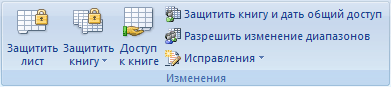
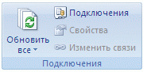
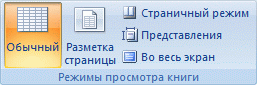

, и затем выберите команду >Сохранить как.
, и затем выберите команду >Сохранить как. Использование общей книги для совместной работы
В Excel можно создать общую книгу и разместить ее в сети для одновременного редактирования содержимого книги несколькими пользователями. Например, если каждый пользователь рабочей группы работает с несколькими проектами и необходимо знать состояние каждого проекта, данная группа для отслеживания состояния проектов может использовать общую книгу. Все пользователи рабочей группы при этом могут вводить данные своих проектов в одну и ту же книгу.
Владелец общей книги может управлять ею, удаляя из нее пользователей и разрешая проблемы, связанные с противоречивыми изменениями. Когда все изменения будут внесены, совместное использование книги можно прекратить.
Предполагаемое действие:
Совместное использование книги
Редактирование общей книги
Удаление пользователя из общей книги
Разрешение проблем, связанных с противоречивыми изменениями, в общей книге
Прекращение совместной работы над книгой
Совместное использование книги
1. Создайте новую книгу и введите в нее необходимые данные или откройте существующую книгу, которую нужно сделать доступной для многопользовательского редактирования.
Примечание. В общей книге поддерживаются не все функции. Если нужно использовать одну из приведенных ниже функций, добавьте ее перед сохранением книги в качестве общей: объединение ячеек, условные форматы, проверка данных, диаграммы, рисунки, объекты (включая графические объекты), гиперссылки, сценарии, структуры, подуровни, таблицы данных, отчеты сводных таблиц, защита книг и листов, и макросы. Эти функции нельзя изменить после предоставления книги для совместной работы.
Функции, не поддерживаемые в общей книге
2. На вкладке Обзор в группе Изменения выберите команду Доступ к книге.

3. На вкладке Правка установите флажок Разрешить изменять файл нескольким пользователям одновременно (это также позволит объединять книги).
4. На вкладке Подробнее выберите параметры для отслеживания и обновления изменений, а затем нажмите кнопку ОК.
5. Выполните одно из следующих действий:
, и затем выберите команду >Сохранить как. 6. На компьютере с Microsoft Windows Vista
На компьютере с Microsoft Windows XP
Примечание. Для этого следует использовать сетевую папку, а не веб-сервер.
7. Проверьте все имеющиеся ссылки на другие книги и документы и обновите неработающие, а затем нажмите кнопку Сохранить на панели быстрого доступа или клавиши CTRL+S.
Проверка и обновление ссылок на другие книги или документы
1. На вкладке Данные в группе Подключения щелкните Изменить ссылки.

Примечание. Отсутствие команды Изменить связи означает, что файл не содержит связанных данных.
2. Для проверки состояния всех связей в списке нажмите кнопку Состояние.
Примечание. При наличии большого количества связей, а также если исходная книга размещена на сетевом ресурсе, а скорость передачи данных по сети мала, проверка может занять значительное время.
3. Проверьте состояние в столбце Состояние, выберите связь, а затем выполните нужное действие.
Примечания
После открытия общей книги данные можно вводить и изменять так же, как и в обычной книге.
1. Откройте общую книгу.
2. Нажмите кнопку Microsoft Office, а затем щелкните Параметры Excel.
3. В категории Основные в группе Личная настройка Office в поле Имя пользователя введите имя пользователя для его идентификации при работе с общей книгой, а затем нажмите кнопку ОК.
4. Вводите и редактируйте данные на листах в обычном порядке.
Примечание. При этом будет невозможно добавлять или изменять следующие элементы: объединенные ячейки, условные форматы, диаграммы, рисунки, объекты (включая графические объекты), гиперссылки, сценарии, структуры, подуровни, таблицы данных, отчеты сводных таблиц, защиту книг и листов, и макросы.
5. Установите параметры фильтрации и печати для личного использования. Настройки каждого пользователя сохраняются отдельно по умолчанию.
Совет. При каждом открытии книги можно также использовать параметры фильтрации и печати, установленные ее владельцем.
 на панели быстрого доступа или нажмите клавиши CTRL+S.
на панели быстрого доступа или нажмите клавиши CTRL+S. При появлении диалогового окна Возник конфликт доступа устраните конфликты.
Совет. Для получения сведений об устранении конфликтов см. раздел Разрешение проблем, связанных с противоречивыми изменениями, в общей книге.
Примечания
Удаление пользователя из общей книги
При необходимости можно отключать пользователей от общей книги.
Примечание. Перед отключением пользователей нужно убедиться, что они завершили работу с книгой. Если удалить активного пользователя, его несохраненные изменения будут утеряны.

Примечание. Хотя это действие и отключает пользователя от общей книги, оно не запрещает ему редактирование общей книги в дальнейшем.

Разрешение проблем, связанных с противоречивыми изменениями, в общей книге
Конфликт возникает тогда, когда два пользователя одновременно редактируют одну общую книгу и пытаются сохранить изменения, влияющие на одну и ту же ячейку. Приложение Excel может сохранить только одно изменение в этой ячейке. Когда второй пользователь пытается сохранить книгу, открывается диалоговое окно Возник конфликт доступа.
Для сохранения всех оставшихся собственных изменений или всех оставшихся изменений другого пользователя нажмите кнопку Сохранить все мои оставшиеся изменения или Сохранить все чужие оставшиеся изменения.
Примечание. Сохраненным конфликтующим изменениям соответствует тип Выигрыш для поля Тип действия. Номера строк в столбце Действие обозначают строки со сведениями о противоречивых изменениях, которые не были сохранены, включая все удаленные данные.
Совет. Для сохранения копии книги со всеми изменениями нажмите кнопку Отмена в диалоговом окне Возник конфликт доступа, нажмите кнопку Microsoft Office  , выберите команду Сохранить как, а затем введите новое имя файла.
, выберите команду Сохранить как, а затем введите новое имя файла.
Прекращение совместной работы с книгой
Прежде чем прекратить совместную работу с книгой, убедитесь, что другие пользователи завершили работу. Все несохраненные изменения будут утеряны. Поскольку журнал изменений также будет удален, можно напечатать лист журнала или скопировать его в другую книгу.
и выберите команду Печать.  на вкладке Главная в группе Буфер обмена, переключитесь в окно другой книги, выберите расположение для размещения скопированных данных, а затем нажмите кнопку Вставить
на вкладке Главная в группе Буфер обмена, переключитесь в окно другой книги, выберите расположение для размещения скопированных данных, а затем нажмите кнопку Вставить  на вкладке Главная в группе Буфер обмена.
на вкладке Главная в группе Буфер обмена. Совет. Для получения сведений об удалении дополнительных пользователей см. раздел Удаление пользователя из общей книги.
Примечание. Если этот флажок недоступен, необходимо сначала отменить защиту книги. Для снятия защиты общей книги выполните следующие действия: